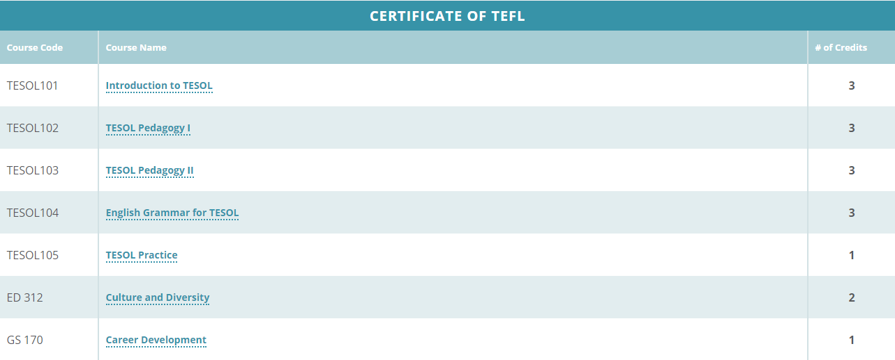
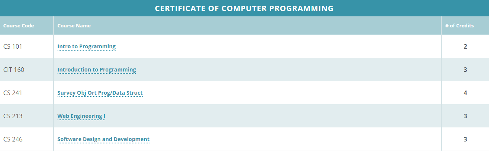
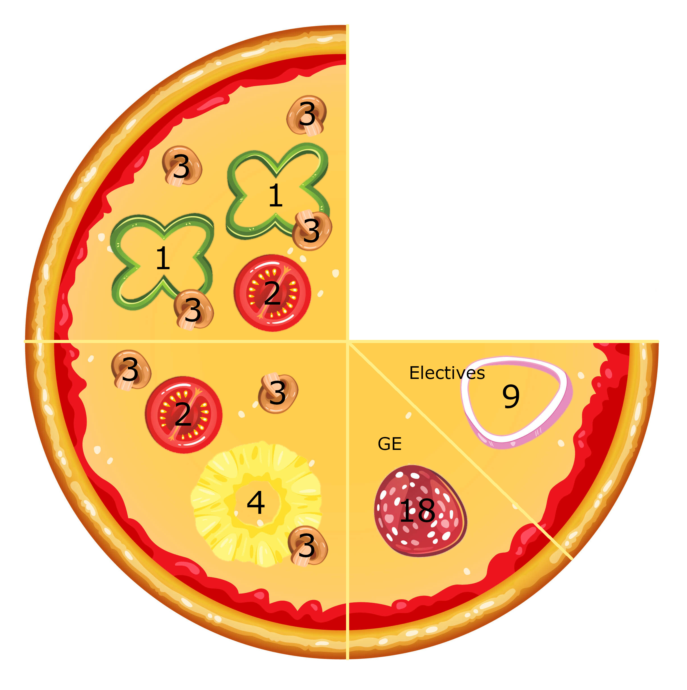
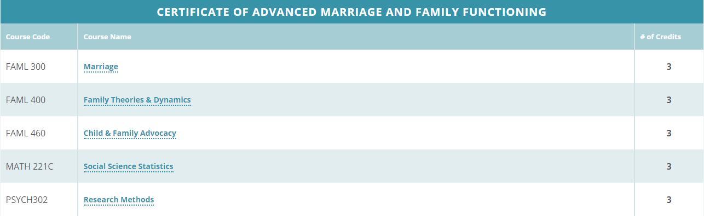
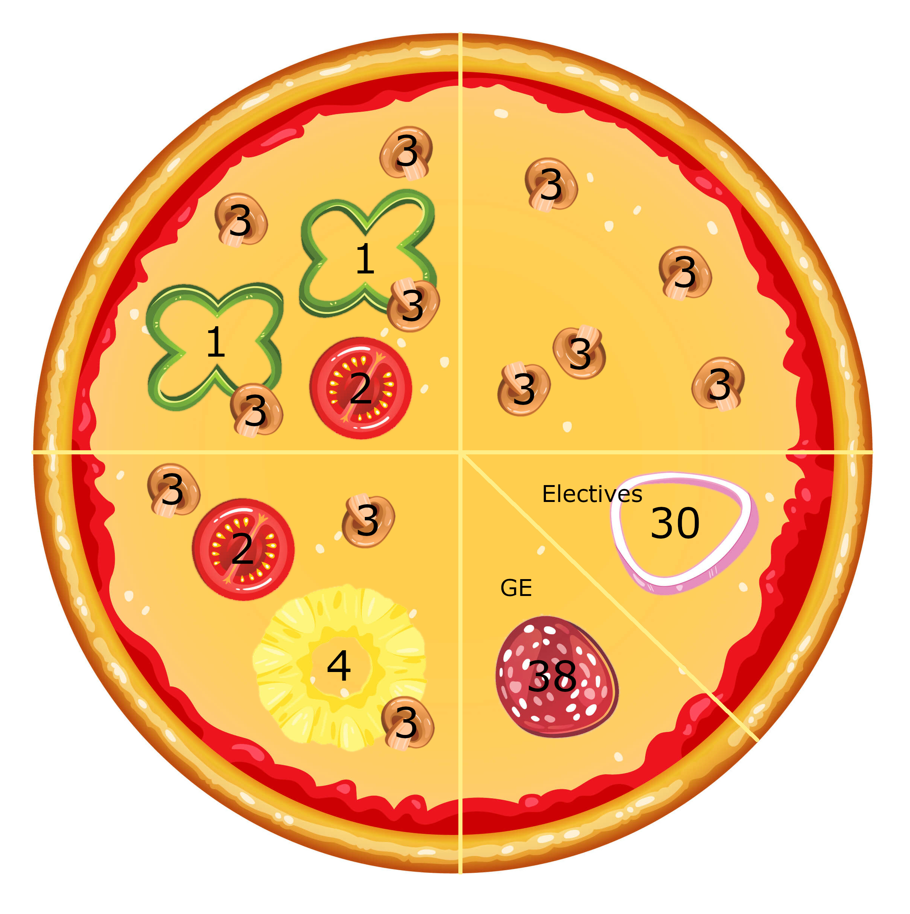
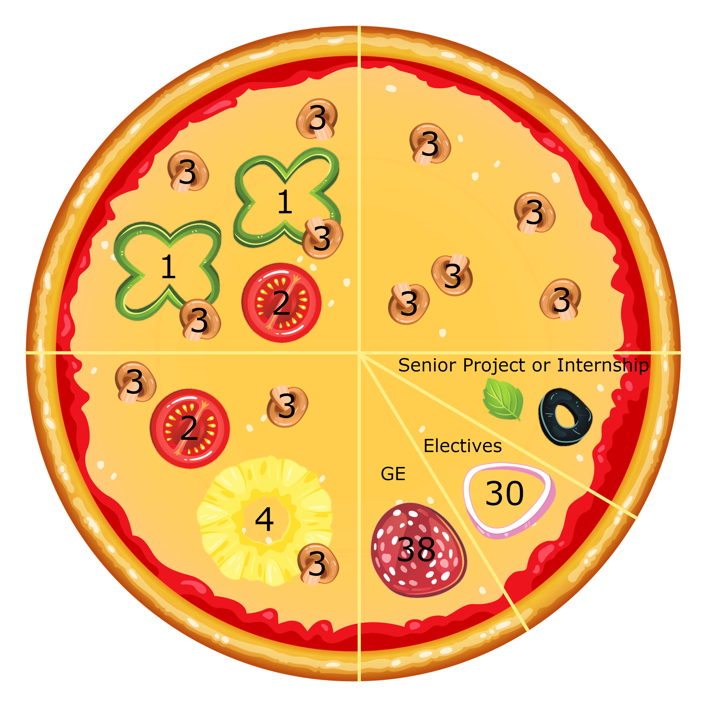

The Wonderful World of Credits
Imagine if BYU-Idaho made Pizza ...
Credits are like the ingredients you put on pizza. Not all are the same. Some take longer to cook or chew. And some are more expensive.
For example, a class worth 3 credits costs more than a class worth 1 credit. Likewise, a 4 credit class requires more time and effort to complete than a 1 credit class. Classes at BYU-Idaho range from 1 to 4 credits each.
Currently on the menu at BYU-Idaho, you can earn:
Your First Certificate
Consider Mary who has decided to earn her Teaching English as a Foreign Language (TEFL) certificate. If her certificate looked like a slice of pizza, it would look like this.
")
1st certificate (7 classes, 16 credits)
The green peppers, tomato and mushrooms represent the number of classes Mary needs to take. In total, she needs 7. Notice, however, the classes are worth different amounts of credit. Together, her 7 classes are worth 16 credits.
During her Pathway program, Mary took an institute class + one or two other classes for a total of 5 credits per semester x 3 semesters. She has already earned 14-16 credits. While She was limited to how many classes she could take at BYU-Pathway, at BYU-Idaho she can take up to 21 credits per semester. Note: During the year there are 3 semesters (Fall, Winter, Spring).
Your Second Certificate
Wanting more, Mary decides to earn a Computer Programming certificate.
")
1st certificate + 2nd certificate (5 classes, 15 credits)
While the second certificate still has some 2 and 3 credit classes, it also has a 4 credit class. This time, Mary ends up taking 5 classes worth a total of 15 credits.
Associate Degree
Once Mary has her second certificate, with a few more classes she can get an Associate of Professional Studies degree. Note: Other degrees are available depending on the certificates you earn.
1st certificate + 2nd certificate + Associate Degree (credits: 18 GE, 9 electives)
To do this, Mary needs to earn 18 general education credits (pepperoni) and 9 elective credits (onion).
| General Education | Electives |
|---|---|
| General education courses are typically designed to teach diverse skills that every person should master. (religion, writing, science, art, etc) | Elective classes in college are courses that count towards your total credits, but are not required by your degree. |
If a class on average equals 3 credits, that means Mary needs about 6 GE classes and 3 electives. Luckily, she can use some or all of the 15 credits she earned in BYU-Pathway.
The Third Certificate
Can you believe, after two certificates and an associates degree, Mary is still hungry! She decides to earn a Marriage and Family certificate. Now her academic pizza looks like this.
1st certificate + 2nd certificate + Associate Degree + 3rd certificate (5 classes, 15 credits)
Notice how the 3rd certificate is also 15 credits yet it is made up entirely of 3 credit classes.
Bachelor´s Degree
Once Mary has eaten her third certificate, she can finish her meal and order a Bachelor´s of Professional Studies degree.
1st certificate + 2nd certificate + Associate Degree + 3rd certificate + Bachelor´s Degree (credits: 38 GE, 30 electives)
Besides the additional certificate, the only other requirement is that she earn additional general education credits and more electives for a total of about 13 or 14 more classes.
Other Degrees
In some cases, a bachelor´s degree may also require a senior project (basil) or an internship (olive).
1st certificate + 2nd certificate + Associate Degree + 3rd certificate + Bachelor´s Degree (credits: 38 GE, 30 electives, senior project or internship)
In the end, Mary will leave BYU-Idaho with:
- BYU-Pathway certificate
- A certificate (TEFL)
- A 2nd certificate (Programming)
- A 3rd certificate (Marriage and Family)
- An Associates Degree (Professional Studies)
- A Bachelors Degree (Professional Studies)
- Friends. So many friends. Seriously, networking can be as important and in some cases more important than the eventual degrees you earn :)
So, how long will all this take?
It all depends on how fast Mary can eat :) Does she work, does she have a family to take care of, is she traveling, does she have money to pay for each credit, etc?
BYU-Idaho recommends 16 credits hours for full time students.
In Summary
| You Earn | Time | Credits | Classes |
|---|---|---|---|
| Certificate | several months | 14-16 credits | 6-7 classes |
| Associates Degree | ~2 years | ~60 credits | ~20-30 classes |
| Bachelor´s Degree | ~4 years | ~120 credits | ~60-75 classes |
The credits assigned to a class identify both it´s cost in money as well as the number of hours one should expect to spend each week to do well. I´ve heard it said we should plan to spend 3 hours per credit per week outside of class. Of course the time required will vary greatly from one student to the next. But in general, a 3 credit class requres about 9 hours of effort per week to do well.
Personally, I have used the degree list page as a good starting point to plan out my academic future.
Bon Appetite
In 1956, during his talk called "Education is a Part of Salvation", President Hugh B. Brown said, "A man cannot be saved in ignorance; your learning is part of your salvation. Do not become complacent with your knowledge but seek education continually".
We have a great task in front of us, I believe that the effort we spend in this cause is worthwhile and we will reap the fruit thereof.
Good luck, and get your pizza while it´s still hot.